2026 Higher Human Biology - Paper 1 questions
Source: Scottish Qualifications Authority (SQA) / Qualifications Scotland. This is a StemInteract HTML companion, not an official HTML edition. Extracted text is supplied alongside unaltered page images; use the images or original PDF for table layout, diagrams and symbols.
Jump to a question
PDF page 1
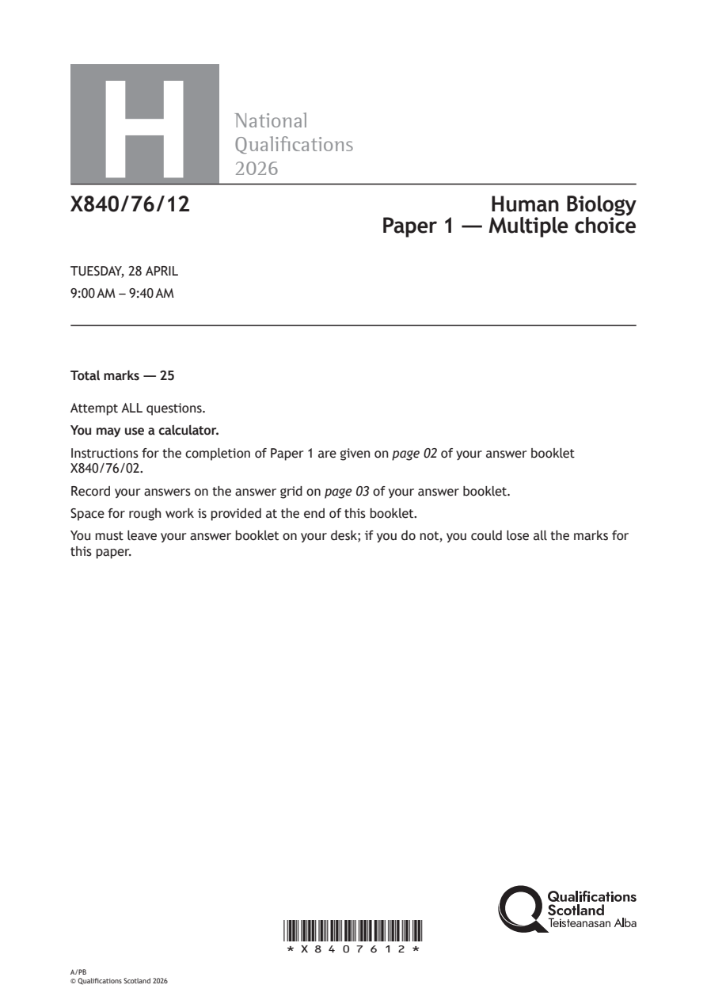
Selectable page text
H
National
Qualications
2026
X840/76/12 Human Biology
Paper 1 — Multiple choice
TUESDAY, 28 APRIL
9:00 AM – 9:40 AM
Total marks — 25
Attempt ALL questions.
You may use a calculator.
Instructions for the completion of Paper 1 are given on page 02 of your answer booklet
X840/76/02.
Record your answers on the answer grid on page 03 of your answer booklet.
Space for rough work is provided at the end of this booklet.
You must leave your answer booklet on your desk; if you do not, you could lose all the marks for
this paper.
*X8407612*
A/PB
© Qualifications Scotland 2026PDF page 2
Question 1Question 2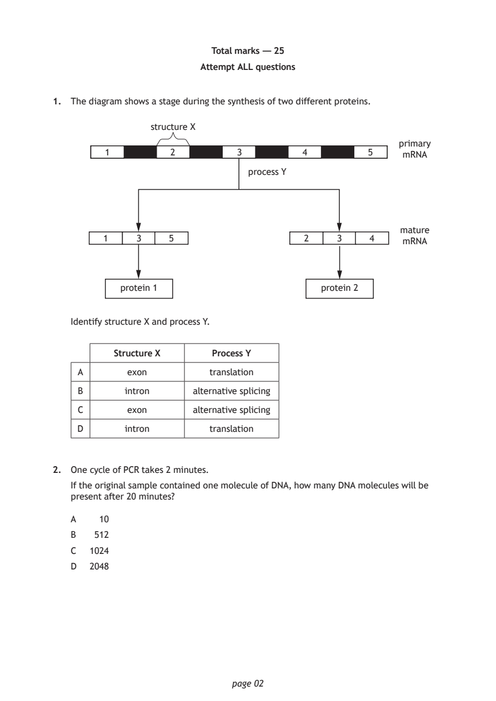
Selectable page text
Total marks — 25
Attempt ALL questions
1. The diagram shows a stage during the synthesis of two different proteins.
structure X
primary
1 2 3 4 5 mRNA
process Y
mature
1 3 5 2 3 4
mRNA
protein 1 protein 2
Identify structure X and process Y.
Structure X Process Y
A exon translation
B intron alternative splicing
C exon alternative splicing
D intron translation
2. One cycle of PCR takes 2 minutes.
If the original sample contained one molecule of DNA, how many DNA molecules will be
present after 20 minutes?
A 10
B 512
C 1024
D 2048
page 02PDF page 3
Question 3Question 4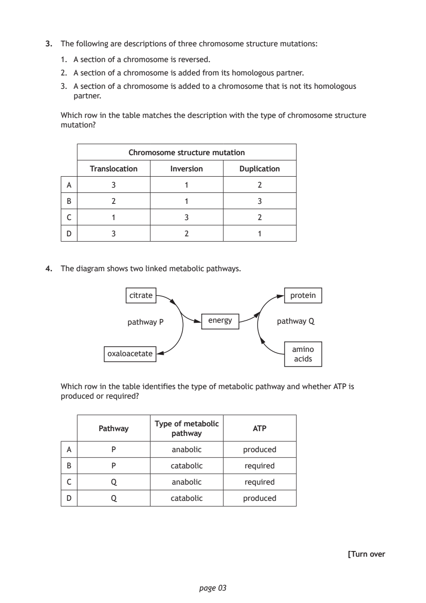
Selectable page text
3. The following are descriptions of three chromosome structure mutations:
1. A section of a chromosome is reversed.
2. A section of a chromosome is added from its homologous partner.
3. A section of a chromosome is added to a chromosome that is not its homologous
partner.
Which row in the table matches the description with the type of chromosome structure
mutation?
Chromosome structure mutation
Translocation Inversion Duplication
A 3 1 2
B 2 1 3
C 1 3 2
D 3 2 1
4. The diagram shows two linked metabolic pathways.
citrate protein
pathway P energy pathway Q
amino
oxaloacetate
acids
Which row in the table identifies the type of metabolic pathway and whether ATP is
produced or required?
Type of metabolic
Pathway ATP
pathway
A P anabolic produced
B P catabolic required
C Q anabolic required
D Q catabolic produced
[Turn over
page 03PDF page 4
Question 5Question 6Question 7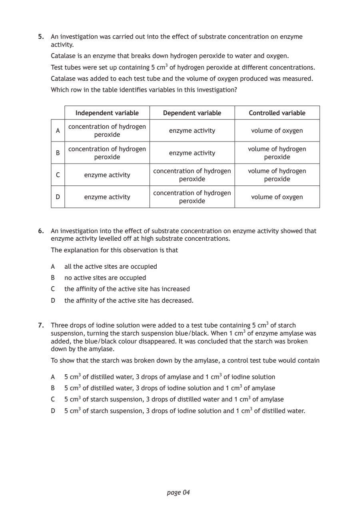
Selectable page text
5. An investigation was carried out into the effect of substrate concentration on enzyme
activity.
Catalase is an enzyme that breaks down hydrogen peroxide to water and oxygen.
Test tubes were set up containing 5 cm3 of hydrogen peroxide at different concentrations.
Catalase was added to each test tube and the volume of oxygen produced was measured.
Which row in the table identifies variables in this investigation?
Independent variable Dependent variable Controlled variable
concentration of hydrogen
A enzyme activity volume of oxygen
peroxide
concentration of hydrogen volume of hydrogen
B enzyme activity
peroxide peroxide
concentration of hydrogen volume of hydrogen
C enzyme activity
peroxide peroxide
concentration of hydrogen
D enzyme activity volume of oxygen
peroxide
6. An investigation into the effect of substrate concentration on enzyme activity showed that
enzyme activity levelled off at high substrate concentrations.
The explanation for this observation is that
A all the active sites are occupied
B no active sites are occupied
C the affinity of the active site has increased
D the affinity of the active site has decreased.
7. Three drops of iodine solution were added to a test tube containing 5 cm3 of starch
suspension, turning the starch suspension blue/black. When 1 cm3 of enzyme amylase was
added, the blue/black colour disappeared. It was concluded that the starch was broken
down by the amylase.
To show that the starch was broken down by the amylase, a control test tube would contain
A 5 cm3 of distilled water, 3 drops of amylase and 1 cm3 of iodine solution
B 5 cm3 of distilled water, 3 drops of iodine solution and 1 cm3 of amylase
C 5 cm3 of starch suspension, 3 drops of distilled water and 1 cm3 of amylase
D 5 cm3 of starch suspension, 3 drops of iodine solution and 1 cm3 of distilled water.
page 04PDF page 5
Question 8Question 9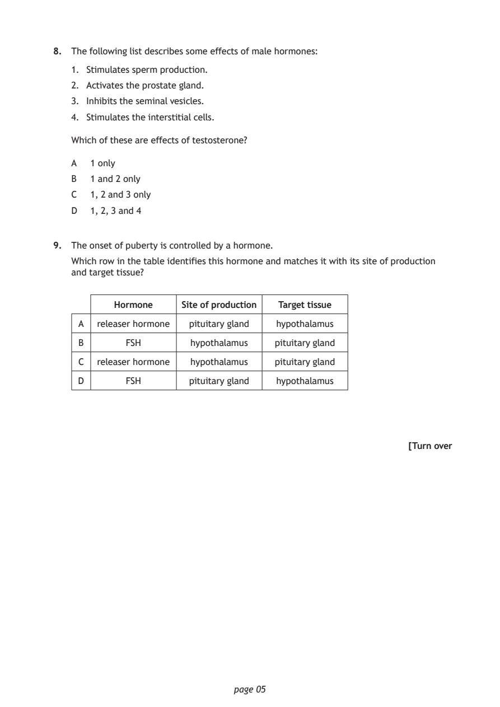
Selectable page text
8. The following list describes some effects of male hormones:
1. Stimulates sperm production.
2. Activates the prostate gland.
3. Inhibits the seminal vesicles.
4. Stimulates the interstitial cells.
Which of these are effects of testosterone?
A 1 only
B 1 and 2 only
C 1, 2 and 3 only
D 1, 2, 3 and 4
9. The onset of puberty is controlled by a hormone.
Which row in the table identifies this hormone and matches it with its site of production
and target tissue?
Hormone Site of production Target tissue
A releaser hormone pituitary gland hypothalamus
B FSH hypothalamus pituitary gland
C releaser hormone hypothalamus pituitary gland
D FSH pituitary gland hypothalamus
[Turn over
page 05PDF page 6
Question 10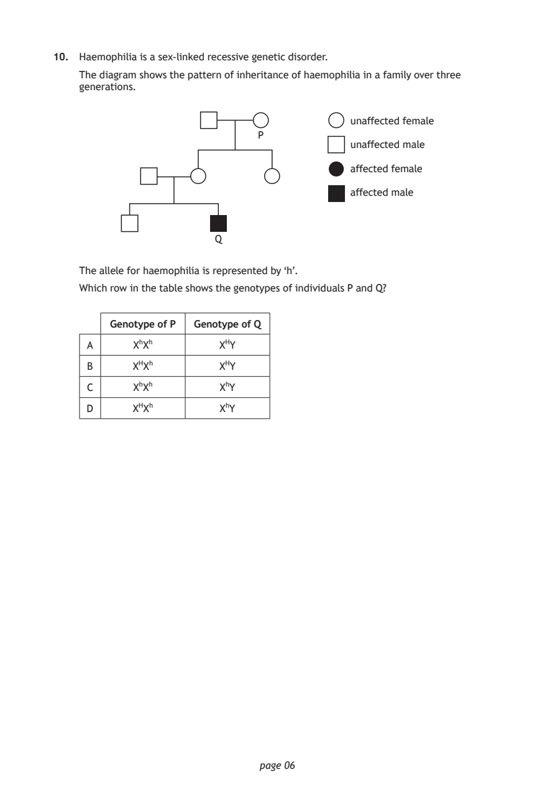
Selectable page text
10. Haemophilia is a sex‑linked recessive genetic disorder.
The diagram shows the pattern of inheritance of haemophilia in a family over three
generations.
unaffected female
P
unaffected male
affected female
affected male
Q
The allele for haemophilia is represented by ‘h’.
Which row in the table shows the genotypes of individuals P and Q?
Genotype of P Genotype of Q
A XhXh XHY
B XHXh XHY
C XhXh XhY
D XHXh XhY
page 06PDF page 7
Question 11Question 12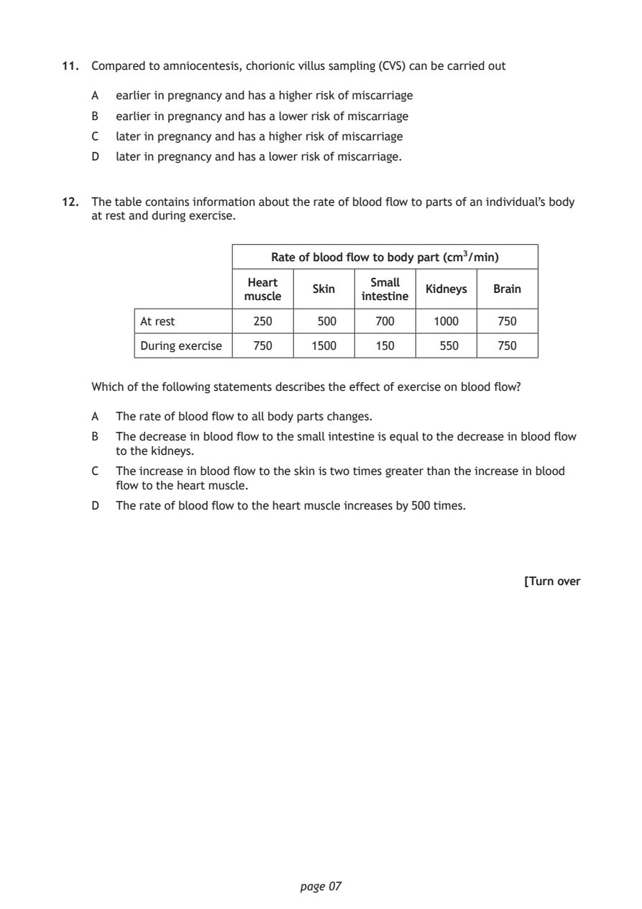
Selectable page text
11. Compared to amniocentesis, chorionic villus sampling (CVS) can be carried out
A earlier in pregnancy and has a higher risk of miscarriage
B earlier in pregnancy and has a lower risk of miscarriage
C later in pregnancy and has a higher risk of miscarriage
D later in pregnancy and has a lower risk of miscarriage.
12. The table contains information about the rate of blood flow to parts of an individual’s body
at rest and during exercise.
Rate of blood flow to body part (cm3/min)
Heart Small
Skin Kidneys Brain
muscle intestine
At rest 250 500 700 1000 750
During exercise 750 1500 150 550 750
Which of the following statements describes the effect of exercise on blood flow?
A The rate of blood flow to all body parts changes.
B The decrease in blood flow to the small intestine is equal to the decrease in blood flow
to the kidneys.
C The increase in blood flow to the skin is two times greater than the increase in blood
flow to the heart muscle.
D The rate of blood flow to the heart muscle increases by 500 times.
[Turn over
page 07PDF page 8
Question 13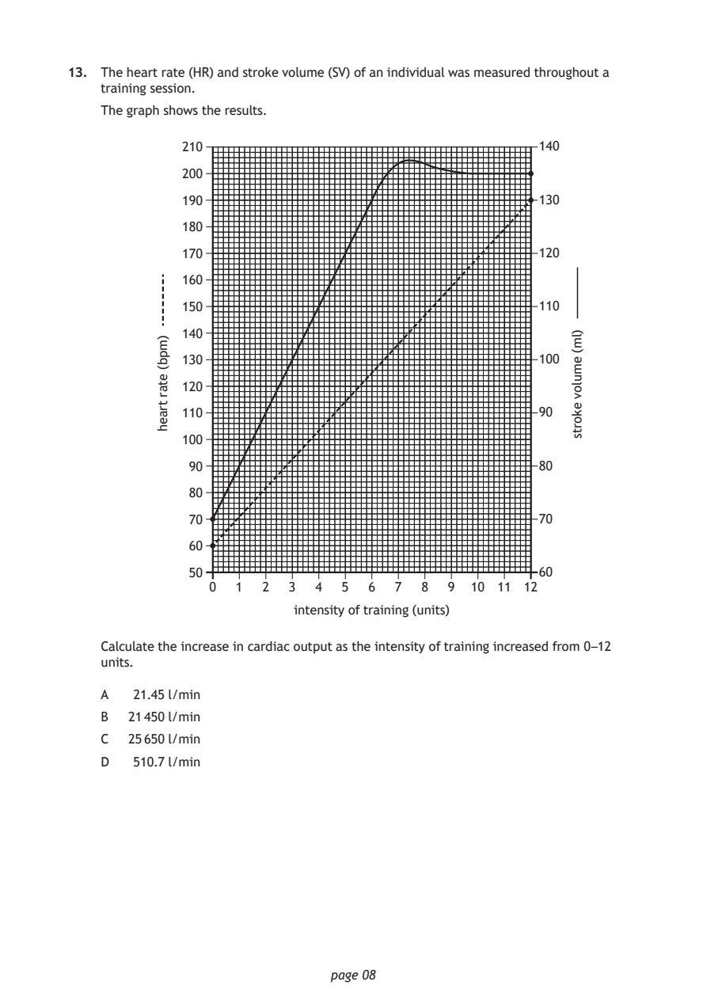
Selectable page text
13. The heart rate (HR) and stroke volume (SV) of an individual was measured throughout a
training session.
The graph shows the results.
210 140
200
190 130
180
170 120
160
150 110
140
130 100
120
110 90
100
90 80
80
70 70
60
50 60
page 08
)mpb(
etar
traeh
)lm(
emulov
ekorts
0 1 2 3 4 5 6 7 8 9 10 11 12
intensity of training (units)
Calculate the increase in cardiac output as the intensity of training increased from 0 –12
units.
A 21.45 l/min
B 21 450 l/min
C 25 650 l/min
D 510.7 l/minPDF page 9
Question 14Question 15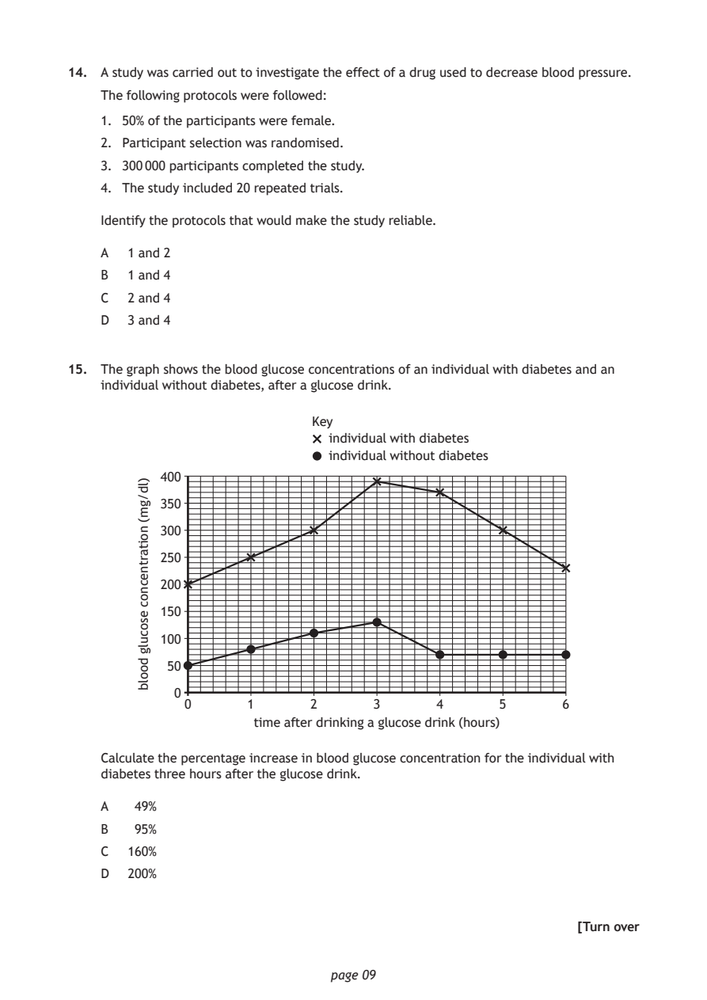
Selectable page text
14. A study was carried out to investigate the effect of a drug used to decrease blood pressure.
The following protocols were followed:
1. 50% of the participants were female.
2. Participant selection was randomised.
3. 300 000 participants completed the study.
4. The study included 20 repeated trials.
Identify the protocols that would make the study reliable.
A 1 and 2
B 1 and 4
C 2 and 4
D 3 and 4
15. The graph shows the blood glucose concentrations of an individual with diabetes and an
individual without diabetes, after a glucose drink.
400
350
300
250
200
150
100
50
0
0 1 2 3 4 5 6
time after drinking a glucose drink (hours)
page 09
)ld/gm(
noitartnecnoc
esoculg
doolb
Key
individual with diabetes
individual without diabetes
Calculate the percentage increase in blood glucose concentration for the individual with
diabetes three hours after the glucose drink.
A 49%
B 95%
C 160%
D 200%
[Turn overPDF page 10
Question 16Question 17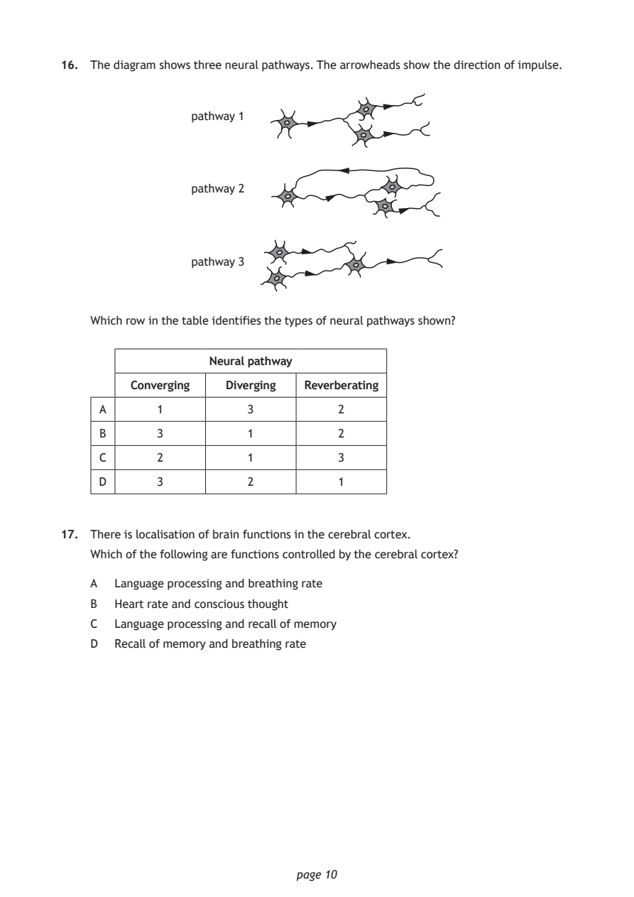
Selectable page text
16. The diagram shows three neural pathways. The arrowheads show the direction of impulse.
pathway 1
pathway 2
pathway 3
Which row in the table identifies the types of neural pathways shown?
Neural pathway
Converging Diverging Reverberating
A 1 3 2
B 3 1 2
C 2 1 3
D 3 2 1
17. There is localisation of brain functions in the cerebral cortex.
Which of the following are functions controlled by the cerebral cortex?
A Language processing and breathing rate
B Heart rate and conscious thought
C Language processing and recall of memory
D Recall of memory and breathing rate
page 10PDF page 11
Question 18Question 19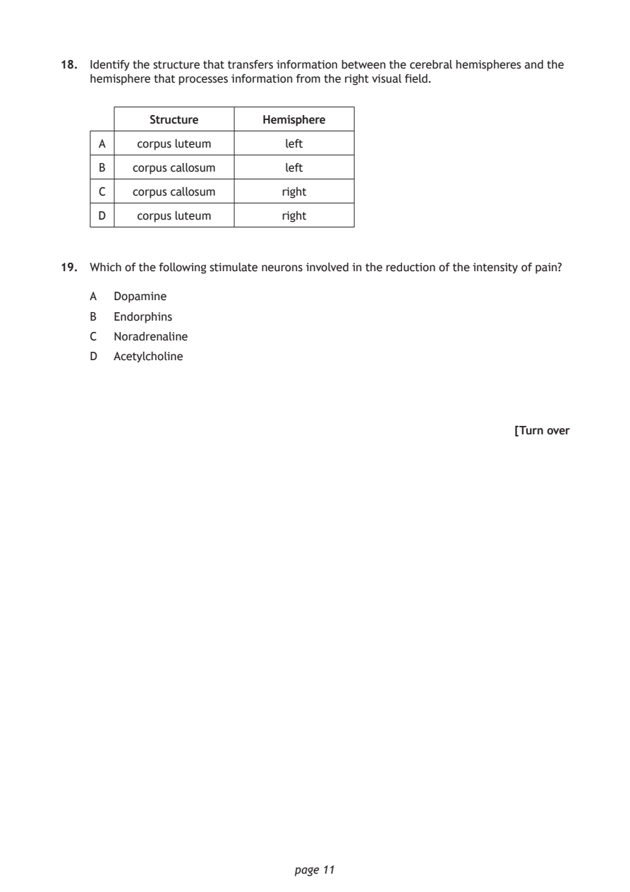
Selectable page text
18. Identify the structure that transfers information between the cerebral hemispheres and the
hemisphere that processes information from the right visual field.
Structure Hemisphere
A corpus luteum left
B corpus callosum left
C corpus callosum right
D corpus luteum right
19. Which of the following stimulate neurons involved in the reduction of the intensity of pain?
A Dopamine
B Endorphins
C Noradrenaline
D Acetylcholine
[Turn over
page 11PDF page 12
Question 20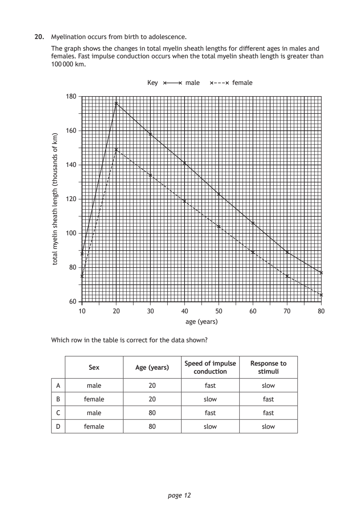
Selectable page text
20. Myelination occurs from birth to adolescence.
The graph shows the changes in total myelin sheath lengths for different ages in males and
females. Fast impulse conduction occurs when the total myelin sheath length is greater than
100 000 km.
180
160
140
120
100
80
60
10 20 30 40 50 60 70 80
age (years)
page 12
)mk
fo
sdnasuoht(
htgnel
htaehs
nileym
latot
Key male female
Which row in the table is correct for the data shown?
Speed of impulse Response to
Sex Age (years)
conduction stimuli
A male 20 fast slow
B female 20 slow fast
C male 80 fast fast
D female 80 slow slowPDF page 13
Question 21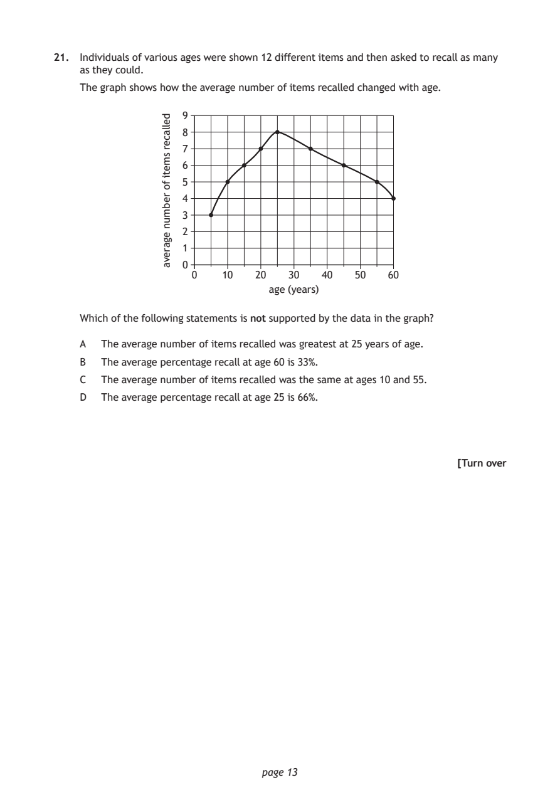
Selectable page text
21. Individuals of various ages were shown 12 different items and then asked to recall as many
as they could.
The graph shows how the average number of items recalled changed with age.
age (years)
page 13
dellacer
smeti
fo
rebmun
egareva
9
8
7
6
5
4
3
2
1
0
0 10 20 30 40 50 60
Which of the following statements is not supported by the data in the graph?
A The average number of items recalled was greatest at 25 years of age.
B The average percentage recall at age 60 is 33%.
C The average number of items recalled was the same at ages 10 and 55.
D The average percentage recall at age 25 is 66%.
[Turn overPDF page 14
Question 22Question 23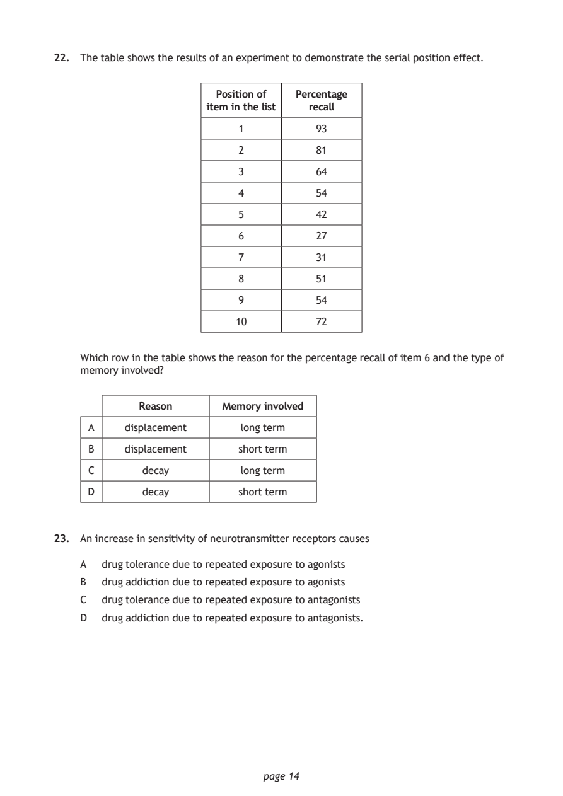
Selectable page text
22. The table shows the results of an experiment to demonstrate the serial position effect.
Position of Percentage
item in the list recall
1 93
2 81
3 64
4 54
5 42
6 27
7 31
8 51
9 54
10 72
Which row in the table shows the reason for the percentage recall of item 6 and the type of
memory involved?
Reason Memory involved
A displacement long term
B displacement short term
C decay long term
D decay short term
23. An increase in sensitivity of neurotransmitter receptors causes
A drug tolerance due to repeated exposure to agonists
B drug addiction due to repeated exposure to agonists
C drug tolerance due to repeated exposure to antagonists
D drug addiction due to repeated exposure to antagonists.
page 14PDF page 15
Question 24Question 25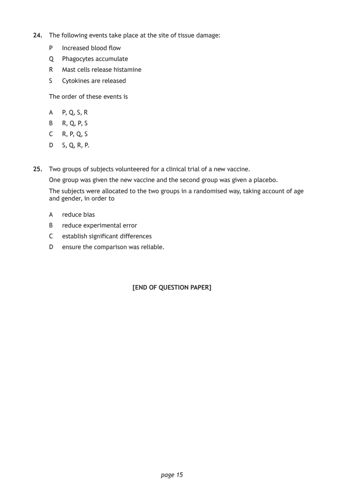
Selectable page text
24. The following events take place at the site of tissue damage:
P Increased blood flow
Q Phagocytes accumulate
R Mast cells release histamine
S Cytokines are released
The order of these events is
A P, Q, S, R
B R, Q, P, S
C R, P, Q, S
D S, Q, R, P.
25. Two groups of subjects volunteered for a clinical trial of a new vaccine.
One group was given the new vaccine and the second group was given a placebo.
The subjects were allocated to the two groups in a randomised way, taking account of age
and gender, in order to
A reduce bias
B reduce experimental error
C establish significant differences
D ensure the comparison was reliable.
[END OF QUESTION PAPER]
page 15PDF page 16

Selectable page text
SPACE FOR ROUGH WORK
page 16PDF page 17
Selectable page text
SPACE FOR ROUGH WORK
page 17PDF page 18

Selectable page text
[BLANK PAGE]
DO NOT WRITE ON THIS PAGE
page 18PDF page 19

Selectable page text
[BLANK PAGE]
DO NOT WRITE ON THIS PAGE
page 19PDF page 20

Selectable page text
[BLANK PAGE]
DO NOT WRITE ON THIS PAGE
page 20